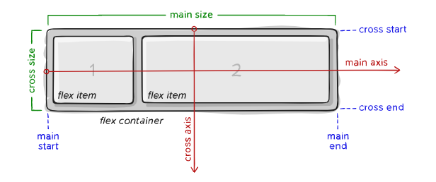

CSS - Flexbox
Links
// FLEXBOX LAYOUT
/*Se aplica a primer nivel. Si hay header, main y footer y se aplica al body, entonces se aplicaran a estos. Pero no a las sub etiquetas
it displays the elements depending on a Main axis and cross axis. They change depending on the direction. By default is horizontal/vertical.
but in column, it's vertical/horizontal*/
display: flex; /*or inline-flex*/
Flex-direction: row, row-reverse, column; /* Establishes the main axis horizontally or vertically */
justify-content: flex-start, flex-end, start, end, left, right, center, space-between, space-around, space-evenly; /*Main axis*/
align-items: stretch, flex-start, flex-end,center, baseline; /*Cross axis */
align-content: flex-start, flex-end, center, stretch, space-between, space-around; /*Cross Axis only applies if there is more than one row of items*/
/* only if there is more than 1 row/column (depending if its row or column); */
flex-wrap: wrap, no wrap; /* whether items wrap to the next row (only applies if combined width of items is greater than container's) */
// FLEXBOX RESPONSIVENESS
order: 1; /* Establishes position in the flex flow To take the remaining space of a container. Takes the remaining space and assigns depending
on the number assigned: 1, 2, 3 proportionally. If you have a size set, it adds to that. If you don't set order in one the value is 0,
it positions at the beginning in the order of the html tags. Negative values are allowed. Not recommendable because it affects on the tab
so it is not good for accessibility*/
flex-shrink: 3; /* Establishes how items shrink in relation to one another when resizing. Default 1, when 0: prevents the items to shrink */
flex-grow: 2; /* Establishes how items grow in relation to one another when resizing*/
flex-basis: auto; /* 0. To avoid the above. It sets size to 0 to calculate. Works in fractions*/
align-self: auto, flex-start, flex-end; /*Specific alignment of a certain element. Cross axis alignment for individual items*/
inline-flex: /*The container behaves as inline block*/
// OTHERS
Margins do not collapse
